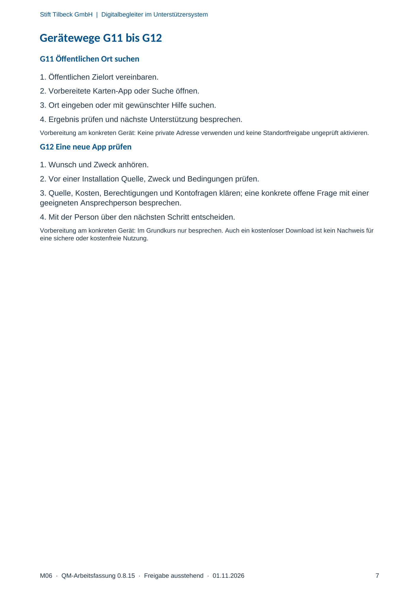

M06 · Originalseite 7
Öffentlichen Ort suchen
Original-Druckseite mit G11. Auf derselben Seite stehen außerdem G12. Diese sind dadurch keine zusätzliche Aufgabe.
Fragen und Ankreuzfelder werden auf dem Ausdruck bearbeitet. Die Lesefassung speichert keine Antworten.
Lesefassung · Seite 7
Stift Tilbeck GmbH | Digitalbegleiter im Unterstützersystem
M06 · QM-Arbeitsfassung 0.8.15 · Freigabe ausstehend · 01.11.2026 7
Gerätewege G11 bis G12
G11 Öffentlichen Ort suchen
1. Öffentlichen Zielort vereinbaren.
2. Vorbereitete Karten-App oder Suche öffnen.
3. Ort eingeben oder mit gewünschter Hilfe suchen.
4. Ergebnis prüfen und nächste Unterstützung besprechen.
Vorbereitung am konkreten Gerät: Keine private Adresse verwenden und keine Standortfreigabe ungeprüft aktivieren.
G12 Eine neue App prüfen
1. Wunsch und Zweck anhören.
2. Vor einer Installation Quelle, Zweck und Bedingungen prüfen.
3. Quelle, Kosten, Berechtigungen und Kontofragen klären; eine konkrete offene Frage mit einer
geeigneten Ansprechperson besprechen.
4. Mit der Person über den nächsten Schritt entscheiden.
Vorbereitung am konkreten Gerät: Im Grundkurs nur besprechen. Auch ein kostenloser Download ist kein Nachweis für
eine sichere oder kostenfreie Nutzung.
Originalseite ansehen
